kai
 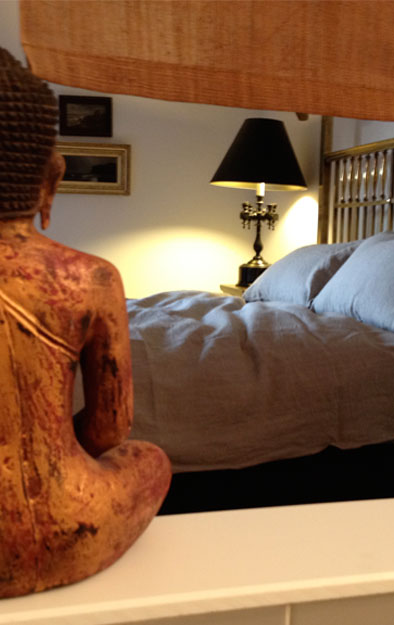
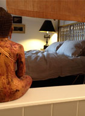
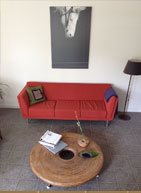
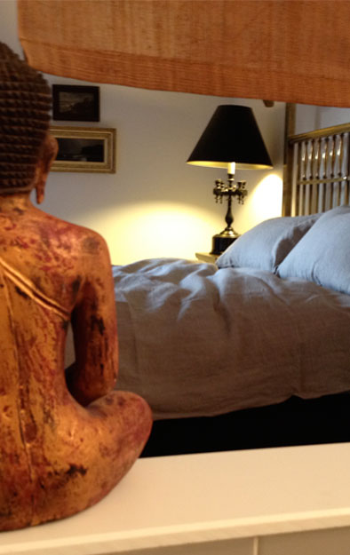
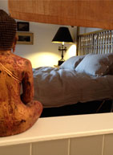
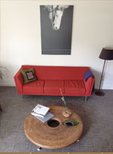
I wanted to capture some of the sensuality of the linen and contrast it with the cool surfaces of the bed, walls, and tiles. I enjoy making the bed. Every morning, and after I wash the linens. So I took some photographs of that act. The bed is a 19th century Belgian colonial piece from Africa. The little Ivory Coast statuettes in the hallway greet it from a short distance. The Buddha from Thailand watches over my sleep. The sleepy horse in the living room watches over my many reading hours on the couch. One of my regrets in life is that I cannot inherit my linens. How soft they will be.
 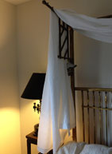
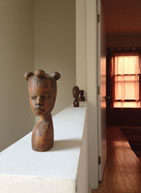
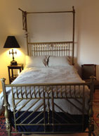
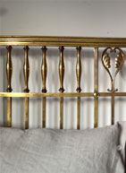
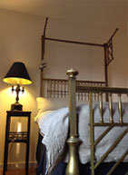
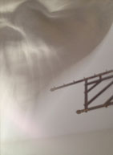
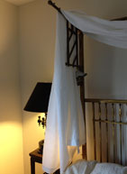
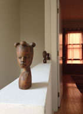
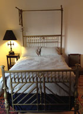
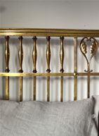
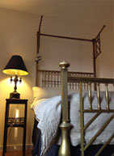
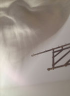